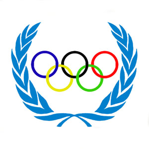
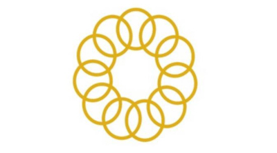
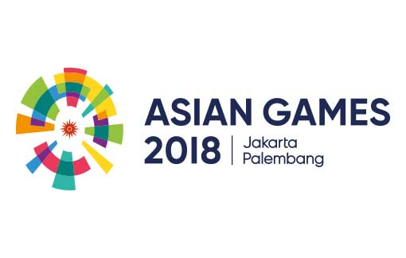

Untuk pertama kalinya Indonesia mampu meraih medali di Olimpiade Seoul 1988 melalui cabang olahraga panahan. Atlet panahan Indonesia yang pernah meraih perak di Olimpiade adalah Nurfitriya Saiman, yang berasal dari daerah DKI Jakarta, Lilies Handayani merupakan atliet asal Surabaya dan Kusuma Wardhani berasal dari Makassar. Perbedaan provinsi tidak menyurutkan semangat untuk meraih prestasi di bawah bimbingan atlet panahan senior Donald Pandiangan.

Pada SEA Games 1977 di Malaysia pemahan-pemanah Indonesia berhasil menyumbangkan 5 emas, 2 perak, dan 2 perunggu. Prestasi Panahan Indonesia mengalami kenaikan dan penurunan hingga pada SEA Games tahun 2015 di Singapura cabang olahraga Panahan Indonesia menyumbangkan 2 emas (Individual Recursive dan Mixed Recurved), 3 perah (Tim Compound putra, tim recurve putra, dan tim recurve putri), dan 1 perunggu (Individual compound).

Cabang olahraga panahan untuk pertama kalinya menyumbang medali perunggu beregu putra pada Asian Games tahun 1978. Prestasi para pemanah mulai meningkat dengan berhasil meraih medali perak pada Asian Games tahun 1982 untuk nomor beregu putra dan 1994 pada nomor beregu putri.